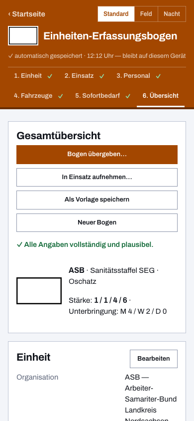

Einheiten-Erfassungsbogen für den ASB
Beim MANV zählt jede Minute, bei der Übung jede Wiederholung — und in beiden Fällen beginnt es mit derselben Frage: Welche Einheit ist mit welcher Stärke und welchen Fahrzeugen einsatzbereit? Dieser digitale Einheiten-Erfassungsbogen ist das kostenlose Online-Tool für den Arbeiter-Samariter-Bund: Die Meldung der Schnelleinsatzgruppe oder KatS-Einheit entsteht am Bildschirm, wird als PDF im gewohnten Papier-Layout gedruckt und wandert per QR-Code ohne Internet zur Führungsstelle.
Von der SEG bis zur KatS-Einheit
Der Bogen kennt den ASB als eigene Organisation — Begriffe, taktische Zeichen und Kennfarbe passen sich an. Gezählt wird die Stärke in der gewohnten Gliederung Führer / Unterführer / Mannschaft / Gesamt; Fahrzeuge vom KTW bis zum GW-San stehen mit Funkrufname und Kennzeichen im Bogen. Für die Katastrophenschutz-Einheiten, die die Hilfsorganisationen in mehreren Bundesländern stellen, liegen fertige Landesvorlagen bei.
Schnell erfasst — auch ohne eigenen Bogen
Trifft eine ASB-Einheit ohne Bogen am Bereitstellungsraum ein, erfasst der Meldekopf sie am Tablet in wenigen Minuten: Stärke über Touch-Zähler, Führungskraft, Fahrzeuge. Bringt sie einen QR-Code mit, genügt ein Scan — der Code enthält den kompletten Bogen, nicht bloß einen Link. Die Sammlung summiert Stärke und Bedarf laufend über alle anwesenden Einheiten.
Auswertung ohne Abtippen
Was digital gemeldet wurde, muss niemand mehr abschreiben: Die Einsatz-Sammlung wird als Sammel-PDF oder Datei weitergegeben, die Tabellen lassen sich als CSV exportieren und in der Stabsarbeit weiterverwenden. Wer Herkunft prüfen will: Bögen können mit einer Ed25519-Signatur versehen werden, freiwillige Absenderangaben machen Rückfragen möglich.

Häufige Fragen aus dem ASB
Wie schnell ist eine Einheit erfasst?
Mit gespeicherter Vorlage: unter einer Minute — laden, mustern, fertig. Ohne Vorlage führt der Assistent in fünf Schritten durch Einheit, Einsatz, Personal, Fahrzeuge und Sofortbedarf; am Meldekopf reicht die Schnellerfassung mit Stärke und Fahrzeugen.
Lassen sich die Daten in andere Systeme übernehmen?
Ja — als CSV-Export der Einsatz-Sammlung für Tabellen und Stabsarbeit, als Datei zum Wiedereinlesen in die App und als PDF für den Papierlauf. Einen Server, an den Daten fließen, gibt es bewusst nicht.
Was kostet die App und wer pflegt sie?
Sie ist kostenlos und freie Software unter der EUPL-1.2, entwickelt von einem ehrenamtlichen Helfer; der Quellcode liegt offen auf GitHub. Alle Daten bleiben lokal (Datenschutzerklärung).